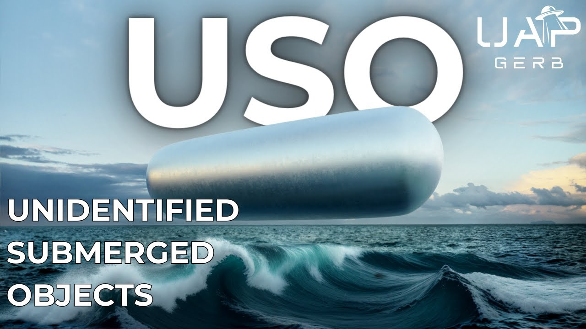

USO - Unidentified Submerged Objects

Published: 2024-04-17 · Duration: 26:29 · Channel: UAP Gerb
Description
A deep dive into UFOs understudied brethren - the unidentified submerged object. This video seeks to uncover the history of USO study within the United States Government, secret and public. As well as investigate a handful of fascinating military USO claims and encounters, the bombshell claims and writing of former USN Rear Admiral Timothy Galladuet, and the anomalous 1971 USS Trepang USO photographs.
USOs or transmedium UAP exhibit similar flight characteristics and shape orientation to their aerial counterparts - triangles, orbs, discs, cigars, etc. Numerous sightings and USG video recordings of these craft lead many to believe there is no difference between transmedium UAP and USO, the flight characteristics of these vehicles are so astounding they exhibit anomalous movements within any fluid medium.
The studies of USO are criminally overlooked, as we can trace a serious investigation and purposeful obfuscation of these waterborne objects all the way back to the beginnings of project Blue Book in the early 1950's. Similar to UFOs and flying discs, the USG took sightings of these craft extremely seriously, but restricted and even hid reporting of sightings.
00:00 Intro 02:20 USO HISTORY 07:05 USO CLAIMS 10:30 REAR ADMIRAL TIMOTHY GALLAUDET 16:39 MILITARY USO ENCOUNTERS 21:04 USS TREPANG IMAGES 24:42 CONCLUSION
Dewey Fournet Operation Interloper: https://www.ufoexplorations.com/_files/ugd/aa4aac_a0261f418177495ca81a5c831721b607.pdf http://www.nicap.org/docs/bethune_nicapfile_02.pdf
AFOIN-X(SG) 9 Undersea Encounters (pg 145): https://archive.org/details/needtoknow00good/page/145/mode/1up
Rupplet Documents: https://web.archive.org/web/20211130015126/http://www.nicap.org/match/papers/PentagoReportNotNews.htm https://web.archive.org/web/20211130015350/https://www.nicap.org/docs/520103-Garland-memo-to-Samford.pdf https://archive.org/details/reportonunidenti00rupp/mode/1up
CUFON FOIA Requests: http://textfiles.com/ufo/cufon5.txt
JANAP146(C) : https://www.nsa.gov/portals/75/documents/news-features/declassified-documents/ufo/janap_146.pdf https://www.cufon.org/cufon/janp146c.htm https://archive.org/details/B-001-014-055/page/282/mode/2up
Donald Keyhoe Flying Saucer Conspiracy: http://www.nicap.org/books/fsc/flying-saucer-conspiracy.pdf
Marc Dantonio: https://www.thesun.co.uk/news/4487506/us-navy-is-running-top-secret-programme-to-detect-alien-spacecraft-under-the-ocean-ufo-expert-claims/
Oke Shannon Notes: https://files.afu.se/Downloads/Documents/0%20-%20UFO%20Researchers/Grant%20Cameron/A dvanced%20Theoretical%20Physics%20WG/Oke%20Shannon/pdf/ATPWG%20-%20notes%20b y%20Oke%20Shannon%20-%20SSN%20redacted.pdf
Ex CIA John Ramirez: https://www.youtube.com/watch?v=Ku9GsJ94Dt4 https://wikileaks.org/ciav7p1/files/org-chart.png
Timothy Gallaudet News Nation: https://www.youtube.com/watch?v=M01DWnEQeSI
Timothy Gallaudet Chris Lehto: https://www.youtube.com/watch?v=n_UsFX0op8k
Timothy Gallaudet SoCal Anomoly: https://twitter.com/GallaudetTim/status/1767899315798753391
Lue Elizondo Interview: https://www.youtube.com/watch?v=_YSrVhCS-rc
USS Nimitz Kevin Thomas: https://www.youtube.com/watch?v=6sjLyFrBBkw
Baughman Tic Tac UFO: https://medium.com/on-the-trail-of-the-saucers/new-navy-witness-says-he-saw-a-tic-tac-operating-underwater-92344d29ac1
USS Trepang Black Vault Analysis & Images: https://www.theblackvault.com/casefiles/arctic-ufo-photographs-uss-trepang-ssn-674-march-1971/
USS Trepang: https://www.hullnumber.com/SSN-674
Fata Morgana: https://en.wikipedia.org/wiki/Fata_Morgana_(mirage)
Music By: https://www.youtube.com/channel/UCz71_7z7NphLPZ0l_7G3Llg https://www.youtube.com/@UCacamYVDLEtG00SWmJuR8qw https://www.youtube.com/@hurricanebeatz-ysm/videos
Thumbnail Original Artwork: https://www.reddit.com/user/GodDestroyer/
THIS VIDEO IS FOR EDUCATIONAL PURPOSE ONLY! FAIR USE PRINCIPLES UNDER SECTION 107 OF THE COPYRIGHT ACT.
ufo #uap #uapnukes #uapdisclosure #ufology #ufonews #ufosightings #uapsightings #ufofootage #uapfootage #hynek #condoncomittee #Jallenhynek #projectsign #projectgrudge #projectbluebook #bluebook #ufocongress #SOL #solfoundation #karlnell #Battelle #UFOreverseengineering #lockheed #skunkworks #lockheedmartin #rosscoulthart #fastwalker #blackvault #slowwalker #kingman #ufocrash #nickredfern #Grusch #Magenta #michaelherrera #USO #TimothyGallaudet
Transcript
Show transcript
Until recently, UFOs have been seen as anomalous craft operating in deep space, near Earth orbit, within Earth's atmosphere, and occasionally, whether purposefully or due to a mysterious crash, touching our planet's surface. But a fascinating aspect of the trans-medium capabilities of these craft has long been forgotten. Until Commander David Fraver's sighting of the tic-tac, which seemingly communicated with something churning under the water's surface, military footage showing UAP entering or leaving Earth's waters, in the incredible efforts of Rear Admiral Timothy Gallaudet. What's up guys, it's UAPGurb, and today I want to cover the history and some famous historical sightings of one of the most overlooked aspects of the phenomenon, undersea UFOs, or unidentified submerged objects. The idea UFOs are not only operating in our skies, but also the most unexplored regions of our planet is both profound and somewhat disturbing. So let's not waste time, let's get right into it. Shockingly, the study of USOs is not a recent undertaking. In fact, we can head all the way back to the early days of Project Blue Book in 1951. USAF Major Dewey Fernet, Blue Book member, undertook one project interloper with the aid of the US Navy. The goal of this project was to investigate both aerial and undersea UAP. Regardless of serving as a sitting Blue Book member, Fernet's operation interloper was curiously an extra governmental investigation, meaning it was exempt from all Freedom of Information Act requests. Whether this was directed by USG Elements or not, I'm not quite sure. However, in 1953, interloper briefed the CIA, but the project's findings never reached Congress or the American people. Today, only three case files remain from Fernet's project, cases 26, 27, and 28. Case 26 covers US Navy Lieutenant George P. Williams, who alongside with his nine-man crew in their Navy Fleet Logistics Air Wing plane, observed a trans-medium UFO depart the ocean and traverse the skies between Kefalvik, Iceland, and Newfoundland. The object, initially mistaken for a ship, rose from beneath the clouds and approached the Navy aircraft at a, quote, terrifying closing rate. The object hovered near the air wing's port site before disappearing at alarming speeds. The object was described as elliptical or cigar-shaped, measuring a minimum of 200 feet with a red-orange glow along the periphery. The other two surviving cases do not fit our investigation today, but still check this out. Case 27 highlights the experience of a South African Airways constellation craft en route from London to Johannesburg. Near the Kenya border, the airplane crossed over the crater of a long-extinct volcano where the pilots noticed a silvery disk stationed deep within the crater. The disk took off at a high rate of speed straight up and out of sight of the craft. Next we can look at the 24th of April, 1952, where the Air Force Technical Intelligence Center is written by AFOIN-XSG, regarding the possible connection of submarine contacts. This letter addressed to one Colonel Dunn attaches nine reports of submarine contacts with UFOs, specifically flying disks, with the assistance of ONI, the Office of Naval Intelligence. Unfortunately, these reports are unavailable, but what is interesting are the Navy UFO sightings listed in the 1950s. This information is relayed in Timothy Goode's book, Need to Know, UFOs, the Military and Intelligence. This information is supplied by respected ufologist Leonard Stringfield, who I covered in the Kingman Air of Zona Crash. Stringfield was informed of thousands of ONI UAP reports from 1952 to 1956. But I skipped over this mysterious sender of the nine reports, AFOIN-XSG. AFOIN is the Air Force Office of Intelligence, and we can assume that this SG is a special group. Curiously, we can look back to Edward J. Ruppel, a man I have talked about extensively, who served as director of Project Grudge and Blue Book. Ruppel stated that AFOIN was conducting a more complete investigation of UFOs parallel to Blue Book in the later uncovered Battelle's Project Stork. Ruppel stated AFOIN's technical capabilities branch and collection control branch were specific offices doing UFO related work. Was this Air Force special group tasked with investigating the nine USO reports one of the US government's real secret UFO investigation groups? To me, it appears likely. In 1979, Kufan, the computer UFO network, filed FOIA requests for information on the mysterious special group. All requests were denied under executive order, citing the national security need to maintain classification. The trail here in the 1950s goes much deeper as well. In 1954, JANAP, the Joint Army Navy Air Force Publication, published Directive 146C, where both Airborne and Waterborne UFO were to be reported under service, communication instructions for reporting vital intelligence sightings, and Merrant. I'm guessing this means maritime intelligence. This meant both civilians and pilots were prohibited from discussing officially reported sightings. As service and Merrant sightings were subject to the Communications Act of 1934 and espionage laws, violators would receive a prison sentence and a $10,000 fine. And if you've watched a single one of my videos, you probably know I talk often about USAF Regulation 200-2. So I expect everybody knows that by heart, but if you don't, this regulation restricted all official UFO reporting to be sent to ATIC and not Blue Book. Well, in that same year, 1954, January 23rd, to be precise, the US Navy issued OPNAV, the Office of the Chief of Naval Operations, Directive 3820, which required UAP sightings referenced as flying object reports, to be sent to the Director of ATIC, the Director of USAF Intelligence, and the Director of Naval Intelligence. This report, which we can find a copy of in Donald Keyho's book, The Flying Saucer Conspiracy, directly cites JANAP-146C. With the implementation of 1953's USAF Regulation 200-2, OPNAV Directive 3820, and JANAP-146C, we enter the slow descent into the dark ages of UFO reporting, starting with explanations of swamp gas and weather balloons. So our paper trail here becomes relatively sparse, and we have to start to rely on claims of USO studies and experiences. We must travel all the way to 1985, where ufologist Jacques Vallée claims in Forbidden Science Pacific Heights, a collection of his personal journals, that a source at NARCAP, the National Aviation Reporting Center on anomalous phenomena, told him that a large collection of UFO and USO files were being stored at Norton Air Force Base. Norton has historically been associated with UAP or NHI research, such as being named by Stephen Greer and the disclosure project in his alleged briefing to Congress in 1996. But let's move on to a really curious rabbit hole from 2017. Of course, with an absence of official documentation, this story should be taken with some skepticism. But let's tackle the claims by astronomer Mark Dantonio. With Dantonio, president of FX Models, a company with naval contracts was taken for a ride in a naval submarine as a thank you for his company's contract work. While undersea, the sonar team picked up what they called a fast mover, traveling at several hundred knots. For reference, most submarines and torpedoes travel at roughly 40 knots. The commanding officer told the sonar operator to, quote, log it and dog it, end quote, essentially bury in the encounter. And years later, Mark asked a senior naval figure about the fast mover program. I bet you can all guess the response. Sorry, Mark, I can't talk about that program. These two Dantonio essentially confirmed the program's existence, especially since the figure told Mark that USOs were common and that there was a program in place to classify and log and determine the speed of them, but those reports go into a vault. Of course, remember, this is all just alleged testimony, we have no way to prove this right now. But the year of 2022 is where chatter around USO became much louder and really made its way into the public zeitgeist. I'd like to take a look at the published notes of Oak Shannon, a figure I haven't mentioned since the Wilson Davis memo video. Shannon, former manager of special projects at Los Alamos National Laboratories and Department of Energy Nuclear Physicists, confirmed the authenticity of the Wilson Davis memo, but that's not our focus for today. These notes, published in 2022, recall Oak's time at the Advanced Theoretical Working Group, held at BDM's International's McLean Secure Facility, and classified using DOE controls in 1985. These notes contain some fascinating information and I highly recommend reading them. You already know, just check the show notes. But alongside mention of some UFO hotspots such as Mount Hayes, Alaska, Shannon jots down the Navy has intelligence on an underwater UFO hotspot near Gulfo San Matisse off the coast of Argentina. And we can also look at ex-CIA operative John Ramirez, the man who made the Galactic Federations claims famous, who in 2022 claimed he had heard rumors of a relationship between the Office of Naval Research and the CIA Office of Scientific and Weapons Research slash WINPAC, the Weapons Intelligence Non-Proliferation and Arms Control Center, where USO materials are recovered and transferred to the CIA. Interesting connections here, seen as there are some insane CIA UAP rabbit holes, but I want to save this for a more focused video on the topic. And now we get to absolutely the most credible figure to speak on USO, who featured on Sol's November 2023 panel, Timothy Galladette, retired US Navy Rear Admiral, former assistant secretary of commerce for oceans and atmosphere within the US Department of Commerce, and former administrator of National Oceanic and Atmospheric Administration. Here I am an ocean scientist for three and a half decades, and I sit in a lot of meetings with leading ocean scientists still today, but it just it kind of mystifies me that more people are intellectually curious about what the story of the century is, and that's these, these that are occurring in the water. On a fascinating news nation interview with Ross Coltart, Galladette has made some profound statements such as, We're being visited by non-human intelligence with technology we really don't understand, and with intentions we don't understand it all either. Now that really has surprised me to hear that from a former very high ranking flag officer in the US Navy to actually say you're stating categorically that you believe NHI, non-human intelligence, are real. Absolutely. I think it's about time that we do disclose that we, we are in contact with non-human intelligence. There is so much of interest I want to cover on the Rear Admiral, such as his Sol Foundation discussion surrounding viewing the gimbal and go fast videos, but having them mysteriously removed from his inbox. Or how in his recent tweet, Galladette comments on the Sol Cal anomaly, possibly USO related being scrubbed from Google Earth. But let's focus now on his 2024 Sol published white paper, Beneath the Surface. We may learn more about UAP by looking in the ocean. This excellent paper was written by Galladette, and besides highlighting the obvious threat to maritime security, the paper frames the importance of USO's study as an unprecedented opportunity for maritime science and the subject should be elevated to national research priorities. Galladette calls for action to uncover the unknown unknowns associated with UAP and USO's due to the concerning non-reaction of the DOD regarding unidentified objects with unexplainable characteristics entering US water space. In the executive summary of the piece, the Rear Admiral makes a beautiful statement quote. Yet, however concerning the security implications of UAP are, the scientific ramifications are nothing short of world changing, pilots, credible observers, and calibrated military instrumentation have recorded objects accelerating at rates and crossing the air sea interface in ways not possible for anything made by humans. And several pieces of congressional legislation support these observations by defining UAP as trans-medium vehicles. The stunning implication is that engineering, material science, and physics beyond the state of the art are needed to produce and operate these objects. This knowledge could transform such fields as air and maritime transportation, energy generation, agriculture, communication, computing, manufacturing, space travel, virtually every imaginable economic sector, not to mention defense. Another study of UAP may lead to discoveries that make those of the scientific revolution in the 17th and 18th centuries look like baby steps. Throughout this paper, Gallaudet draws attention to the massive disparity between investigating UAP operating in our skies and UAP operating within our oceans. This is especially highlighted in the abysmal Aero Historical Report Volume 1, which makes a grand total of zero references to any cases or whistleblowers having to do with USO or maritime situations. As I mentioned in the opening statement of this video, and this is really cool to see, Gallaudet mentioned the Tic Tac case as observed in 2004 by the Navy FA-18F Super Hornets where the pilots observed the UAP hovering just above roiling ocean whitewater, possibly indicating a larger UAP below the surface. Other cases highlighted in this paper include the Trans-Medium UAP, filmed in 2013 in Aguadilla, Puerto Rico, captured by US Customs and Border Protection Thermal Imaging Systems. Quote, over three minutes the object appeared to fly at speeds between 40 and 120 mph. Enter and exit the Atlantic Ocean without any significant deceleration, reach a maximum underwater velocity of 95 mph, and at one point split into two parts before entering the water again. The SCU authorities concluded that no known aircraft, naval vessel, projectile, or human made technology possesses these characteristics or capabilities. Gallaudet also draws from a body of literature to state that USO and Trans-Medium UAP are just as diverse as those spotted traversing the skies, quote, luminous orbs, silver and gray discs, and triangular and cigar shaped objects with various lighting conditions. First lighted craft are often seen under the sea surface without ever emerging, end quote. The paper also touches on a fascinating case I have never heard of that occurred off the coast of Shelburne Harbor, Nova Scotia in 1960, and no this isn't Shag Harbor in 1967, however the two are located extremely close. This case covers the encounters of several Royal Canadian Navy divers who participated in a US Canadian joint minesweeping exercise where the divers claimed to have observed two disc shaped craft on the seabed. Not only did the divers say they observed occupants attempting to repair one of the craft, but also recorded footage of the event. Wisely, Gallaudet thought this story pretty nonsensical or unbelievable until recent US military whistleblower revelations. I really recommend reading this whole paper, just check the show notes. The Rear Admiral wrote an excellent piece that deserves attention. After covering the sole paper, I would like to discuss just a handful of fascinating military USO cases that have caught my eye throughout history. In the same year of 2022, Lou Elizondo discussed a fascinating military USO encounter while being interviewed by astronaut Terry Virts. Check this out. I'll tell you, some of this stuff was absolutely riveting. Let's talk about the stuff, I'll share with you one interesting event that occurred. It's pretty incredible. You have, I'm not going to go into too much detail, I want people to know who it is. The person is kind of very cagey about this, but you have a helicopter going out of a Caribbean island on a regular basis because the Navy likes to test fire some of its cruise missile technology and whatnot. What will happen is that after the cruise missile runs out of fuel, it falls into the splashes into the ocean, it will sink and then at a certain time it rises up and we go and fetch it. We analyze it for telemetry and things like that. Long story short, helicopter crew goes out to recover one of these things as they are recovering it the first time, the missile, they're pulling up and something, what was described round and circular about the size of a small island, black, dark color starts rising to the surface. It doesn't break the water, but it starts rising to the surface. They thought, wow, that's really, really peculiar. Well, the next month goes around and they go out to retrieve this, another missile that was test fired. This time we've got a frogman hanging down from the rope about to latch on to the missile and this thing starts coming out of the water again and if you know about the Puerto Rican trench out there, you've talked about water that's 22,000 feet deep. It's the second deepest part of the ocean. The thing starts rising up and it's starting to come to the surface. The frogman is literally trying to climb the rope. They're doing an emergency ascent. It's absolutely panic at the disco, freaking out, what the hell is that, what's going on and as they start to pull up, it sucks the missile under water and then disappears, never to be seen again. And David Fraver's Tic Tac Encounter isn't the only time the US Navy and military has encountered these. In 2010, USN Petty Officer John Bowman saw a Tic Tac shaped object from the flight deck of the USS Carl Vinson off the coast of Haiti, quote, I was staring into the water from above when a large fat white Tic Tac object, approximately 20 feet in length, suddenly appeared in my view below me, moving right and darted into the depths as fast as it appeared. I couldn't really comprehend what I saw. It was definitely a solid object, but when it descended, it's forward and rapidly collapsed in on itself and disappeared and quote, Bowman reported this sighting to his supervising officer but was not debriefed and not to file a report. The officer told him that everybody sees weird things in the ocean. Everybody knows the famous Tic Tac sighting seen from the USS Nimitz in 2004, but did you know in 1991, the same vessel had a USO encounter? Petty Officer Kevin Thomas claimed to have seen a quote, huge black triangle, end quote, near one kilometer in length, lift out of the ocean and shoot vertically into the sky when he was left on deck after the ship was ordered to darken and clear decks. Thomas claimed to have witnessed no water dripping off the craft, nor sound made by the craft. The next day, men in civilian clothes appeared and interviewed Thomas on board the Nimitz asking why he was outside and what he saw. Thomas said not a peep due to fear of being disciplined. This story needs to be approached with some skepticism because full transparency at the moment, I am unable to uncover Thomas' service record. And here I just wanted to cover a handful of these USO cases. If for my next video, you guys would like to see me tackle solely a list of USO cases officially reported throughout Blue Book and other channels, let me know. I personally really want to make that video so if the interest is there, I will absolutely tackle it. And lastly guys, I just wanted to cover a series of very controversial images taken in March of 1971 from the USS Trepang. These images purport to show the vessels encounter with at least two forms of UAP slash USOs, a triangle and cigar shaped craft. Debate has circled endlessly since these photos first appeared, some arguing they are legitimate, some arguing their hoaxes, and some arguing the images are real but depict engagement with test barrage balloons. And I do have to add there are some people who think all or some of these photos are an example of Feta Morgana, a complex mirage appearing above the horizon. The story goes these images first appeared in a French magazine called Top Secret. The original scans of the images were sent to investigator Alex Mistretta. Allegedly, the Trepang station between Iceland and Jan Mayen Island in March of 1971, led by Admiral Dean Reynolds Sackett, happened upon the USOs by accident. Officer John Clica initially spotted the objects with the onboard periscope. Some of these images seem to be harmless snapshots of the objects hovering, entering, or leaving the water, while others appear to show the objects in distress, unknown if this was due to engagement with the Trepang. Well we can actually confirm that the USS Trepang was indeed in the Arctic at this time, especially near Blue Nose Arctic Circle during November of 1971, and we can confirm this was the only vessel in the region. I cannot find any information on if attack submarines carry balloons for training exercises, solely this joint USN CIA document on testing balloon launches from submarines that was conducted in 1955, so this does cast doubt on the balloon training exercise theory for me, especially due to the fact there are no live fire records by the submarine at this time. Investigator and Navy pilot Steve Murillo was able to speak to Admiral Sackett. Admiral Sackett was gracious enough to take multiple phone calls, but steered away from the UFO question. The Admiral stated he did not see anything unusual on board the Trepang, nor did anyone else. He only, quote, saw ice. The alleged spotter from the periscope, John Clica, whose identity we can also confirm, was also contacted. He stated he found the investigation interesting, and did not know what the pictures represented. So these two statements essentially kill the training range story for me. We are left with likely a hoax or the real deal, but the Admiral and Clica either cannot break security oaths or were unaware of these signatures. Unfortunately, one of the best images of the lot shows signs of tampering, credit to Wim Van Utrecht for this discovery. To my knowledge, this is the only such example of photo tampering. Though he is extremely skeptical on these images, I tend to agree with the thesis of John Greenwald here, that this altered image does not discredit the validity of the other images. John states many publications will enhance photographs for print. This is done to improve visual appeal, and since the original images does indeed differ somewhat in aspect from the magazine image, I find this hypothesis to be pretty plausible. So are these images of the triangle, cigar, and possibly an egg-shaped UAP interacting with our oceans real or a hoax? Personally, I'm undecided, I need to do more investigation into this case, but the images are perplexing to say the least. Hey guys, thank you so much for joining me today as we took this dive into the history and fascinating aspects of USO. In my opinion, throughout history USO have been severely overlooked until 2022 and onward. Thank you Timothy Gallaudet, one of the biggest inspirations for this video. I find that I've never ever ever anywhere seen the history of USO study covered. Now here at my channel, and probably many other channels too, we go in depth into Project Blue Book, The Robertson Panel, The Condon Report, all of these aspects throughout history of UFO being studied openly or secretly, but you never hear about USOs. So I just really wanted to touch on this fascinating aspect of the phenomenon. And if you guys want, I really want to make that kind of video on some famous and underrepresented USO cases. I want to pull directly from Blue Book and Grudge and Sine and look from there, find some credible reports. That's a video that really excites me. So if you guys want to see that, let me know in the comments below. Please remember to like and subscribe and if you think about it, join the Patreon, I'm not going to gatekeep any of my content, only pay for what you think the content is worth. And for those of you who are into the sport, how about that 300 card guys? That Holloway Gachie finish was one of the most wild things I've ever seen. I'm happy my boy Yuri Prohaska got the win. And choosing Jamal Hill aged like a gross cheese. So that didn't end up too well. Hope him the best. He's a great fighter. But let me know what you guys think about this next video and some other video ideas you guys want to see. I'm recording this the day after the Kona Blue files came out. So I will definitely be taking a look at those and reporting back to you guys. So thank you so much and I'll catch everybody next time.
Entities
People (63)
- Alex Mistretta
- Blue Book
- David Fraver
- David Fraver's
- Dean Reynolds Sackett
- Donald Keyho's
- Edward J. Ruppel
- Energy Nuclear Physicists
- FX Models
- Feta Morgana
- George P. Williams
- Google Earth
- Gulfo San Matisse
- Jacques Vallée
- Jamal Hill
- Jan Mayen Island
- John Bowman
- John Clica
- John Greenwald
- John Ramirez
- Kefalvik, Iceland
- Kevin Thomas
- Kona Blue
- Leonard Stringfield
- Lou Elizondo
- Mark Dantonio
- McLean Secure Facility
- Mount Hayes
- Navy Fleet Logistics
- Nova Scotia
- OPNAV Directive
- Oak Shannon
- Project Blue Book
- Project Grudge
- Project Stork
- Puerto Rican
- Puerto Rico
- Rear Admiral
- Ross Coltart
- Royal Canadian Navy
- Shelburne Harbor
- Sol Cal
- Sol Foundation
- South African
- Stephen Greer
- Steve Murillo
- Terry Virts
- The Robertson Panel
- Tic Tac
- Tic Tac Encounter
- Timothy Galladette
- Timothy Gallaudet
- Timothy Goode's
- Top Secret
- Trans-Medium UAP
- US Customs
- US Navy
- USG Elements
- USN Petty
- Wilson Davis
- Wim Van Utrecht
- Yuri Prohaska
- Zona Crash
Places (1)
- the Kingman Air
Organizations (14)
- Battelle
- CIA
- Los Alamos National Laboratories
- Navy
- Norton Air Force Base
- US Navy Rear Admiral
- the Air Force Office of Intelligence
- the Air Force Technical Intelligence Center
- the CIA Office of Scientific and Weapons Research
- the Joint Army Navy Air Force Publication
- the Office of Naval Intelligence
- the Office of Naval Research
- the US Department of Commerce
- the US Navy
Download transcripts: SRT · VTT · JSON · TSV